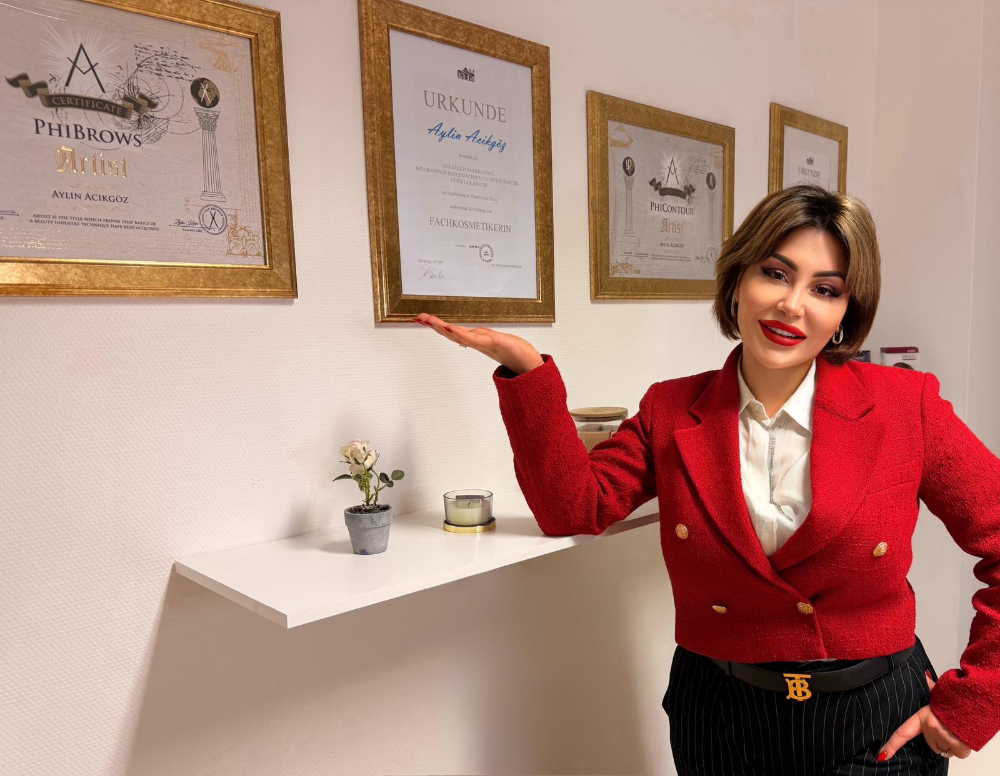

Aylin Acikgöz
Inhaberin · Staatlich anerkannte Fachkosmetikerin
- Staatlich anerkannte Fachkosmetikerin, Berufsfachschule für Kosmetik Wiesbaden
- PhiBrows Artist – zertifiziert für Microblading
- PhiContour Artist – zertifiziert für Lippen- und Augenpigmentierung
- Catwalk Make-up Artist
10+Jahre Erfahrung
8.000+Behandlungen
73×fünf Sterne
Aylin arbeitet seit über zehn Jahren in der Kosmetik, mit Schwerpunkt auf Permanent Make-up und kosmetischen Gesichtsbehandlungen. Was sie an ihrer Arbeit reizt, ist der Teil davor: Hauttyp einschätzen, Brauenform ausmessen, Farbe auf den Hautunterton abstimmen. Genau dort entscheidet sich, ob ein Ergebnis nach Monaten noch gefällt.
Wer zu ihr kommt, bekommt eine ehrliche Einschätzung – auch dann, wenn sie von einer Behandlung abrät oder auf eine andere verweist. Die Qualifikationsnachweise hängen im Behandlungsraum und können jederzeit angesehen werden.
Termin bei Aylin anfragen
Folgen
Aktuelle Arbeiten ansehen
Auf Instagram zeigen wir laufend Ergebnisse aus dem Studio – der schnellste Weg, einen Eindruck von der Arbeit zu bekommen.